Une donnée naît, se range, se partage, se protège — et finit par désigner quelqu'un.
📖 Rappel : la situation et ton hypothèse
5e5e_C1.1C1.2C1.3C1.4C1.5C1.6D2 · D3 · D4 · D55 séances de 55 min🖥 CRCN 1.3 Traiter des données · 1.2 Gérer des données · 4.1 Sécuriser l’environnement numérique
🎯 Avant de commencer : trois choses à lire
📚 Ce que tu vas apprendre Le chemin d'une donnée : mesurée, rangée, vérifiée, puis utilisée pour décider.
Comment la garder juste, et la protéger, tout au long du chemin.
🛠 Ce que tu dois savoir faire Trier et analyser des mesures dans un tableau.
Comparer deux appareils qui font la même chose.
Ranger des fichiers dans des dossiers, et les retrouver.
✅ Comment réussir Un nombre ne parle pas seul : écris toujours ce qu'il mesure, et son unité.
Une case vide reste vide : n'invente jamais une valeur.
Après chaque exercice, compare avec la correction.
📚 Le référentiel de la séquence — en toutes lettres
Référence normative : programme de technologie du cycle 4, BO n°9 du
29 février 2024. Codification opérationnelle : 5e_C1.1 à
5e_C1.6. Ces codes servent à ranger les séquences ; ils ne viennent pas du programme officiel. À la fin de cette séquence, je serai capable de… — l'intitulé de la colonne est de nous ; les formulations citées, elles, sont celles du BO, qui ne dit pas « je ».
Code
Je serai capable de…
Où
5e_C1.2
Comparer des principes techniques pour une même fonction
technique.
Séance 1
5e_C1.1
Collecter, trier et analyser des données.
Séance 2
5e_C1.4
Recenser des données, les identifier, les classer, les
représenter, les stocker, les retrouver dans une arborescence.
Séance 3
5e_C1.3
Décrire le rôle des systèmes d'information dans le partage
d'information.
Séance 4
5e_C1.5
Identifier des règles permettant de sécuriser un environnement
numérique (bases de la cybersécurité) et des règles de respect de la propriété
intellectuelle.
Séance 5
5e_C1.6
Appréhender la responsabilité de chacun dans les dérives
(cyberviolence, atteinte à la vie privée, aux données personnelles, usurpation
d'identité).
Séance 5
Socle — D2 méthodes et outils pour apprendre · D3 formation de la personne et du citoyen ·
D4 systèmes techniques · D5 représentations du monde.
🧵 Six codes, une seule donnée. Le relevé du capteur de la cour va traverser
toute la séquence : il sera mesuré (C1.2), trié (C1.1), rangé (C1.4),
partagé (C1.3), protégé (C1.5) — et il finira par désigner quelqu'un (C1.6). Ce n'est pas six leçons : c'est une seule histoire, en six moments.
🔎 Ce que disent ces étiquettes.5e : le niveau.
C1.1 à C1.6 : les six compétences travaillées — des codes de classement propres à ce
site, écrits en toutes lettres plus bas. D2 · D3 · D4 · D5 : les domaines du
socle commun, les grandes familles de ce qu'on apprend au collège.
CRCN : le cadre des compétences numériques, celui qu'on retrouve dans Pix.
5 séances de 55 min : le temps prévu, sans compter le QCM.
Tes réponses sont enregistrées dans ce navigateur uniquement :
elles ne partent nulle part, et tu les retrouveras sur ce même ordinateur.
🖥️ Ordinateur partagé (salle de techno, CDI — le centre de documentation et d'information) : un autre élève qui ouvre cette page sur la même session verra tes réponses. Quand tu as fini : imprime en PDF si tu veux garder une trace, puis clique sur « 🗑 Effacer ma sauvegarde ».
🎯 Le mode essentiel masque les
corrections et les compléments : il ne reste que les consignes et les exercices. Utile quand la
page paraît trop chargée. Rien n'est perdu — un second clic ramène tout.
🇨🇳 La situation : un capteur dans la cour, et personne ne sait quoi en faire
Un collège de Chengdu a installé un capteur de particules fines (des poussières si petites qu'on ne les voit pas, et qui entrent dans les poumons) dans sa cour. Depuis
une semaine, il enregistre une valeur toutes les heures. Le fichier grossit : 90 lignes.
Personne n'ose s'en servir. Le professeur de technologie a ouvert le fichier et s'est
arrêté : il y a une valeur négative. La vie scolaire voudrait savoir s'il faut ouvrir
les fenêtres le matin. Et quelqu'un a déjà envoyé une capture d'écran dans un groupe de discussion,
avec un commentaire.
Une donnée qui reste dans un fichier ne sert à rien.
Une donnée qu'on publie sans réfléchir peut faire du mal. Entre les deux, il y a tout le
travail.
⚠️ Toutes les données de cette séquence sont simulées, construites pour
l'exercice. Elles ne décrivent aucun établissement réel.
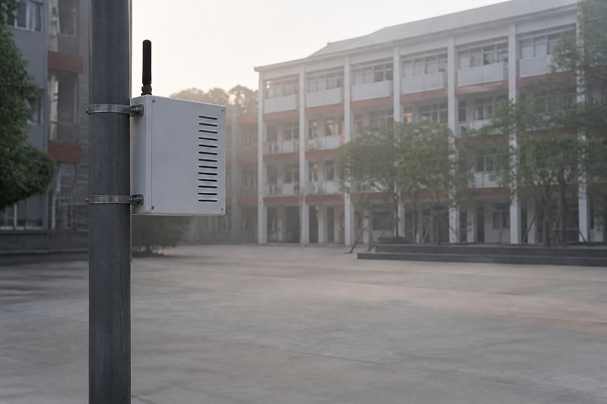
Le capteur de la cour, sur son poteau. Il mesure toutes les heures ; ce qu'on fait ensuite de ses mesures, c'est la séquence. Image générée par IA (Canva).
❓ Problématique
Que faut-il faire à une donnée, depuis l'instant où
elle est mesurée jusqu'à celui où quelqu'un décide grâce à elle ?
💭 Ton hypothèse de départ
🪜 Version étayée — des phrases à compléter
Le niveau attendu est exactement le même : on retire l'obstacle de la rédaction,
pas l'exigence.
« D'abord, il faut ____. »
« Ensuite, ____. »
« Je pense qu'il y a en tout ____ étapes. »
Au bilan, tu compteras combien tu en avais trouvées. La plupart des gens en
citent deux ou trois : il y en a six, et chacune peut tout gâcher.
0 / 5 activités validées
🎫 Billet d'entrée — je vérifie mes outils (5 min, sans note)
Trois questions sur ce que tu sais déjà. Aucune note : c'est un aiguillage.
✅ Correction complète du billet — ouvre-la après avoir vérifié
Qu'est-ce qu'une fonction technique ? ✅ ce que l'objet doit faire, avec un verbe ✘ « le nom du composant qui fait tout le travail » : Le composant, c'est la solution technique : il dit COMMENT. La fonction dit ce que l'objet doit faire, avec un verbe.
✘ « la marque et le modèle de l'appareil » : La marque ne dit rien de ce que l'objet doit faire : une fonction se dit avec un verbe.
✘ « ce que l'objet coûte à fabriquer » : Le prix est une caractéristique, pas une fonction. Une fonction dit ce que l'objet doit faire, avec un verbe à l'infinitif.
Avec quelle formule calcule-t-on une moyenne au tableur ? ✅ =MOYENNE(A2:A8) ✘ « =SOMME(A2:A8) » : SOMME additionne les valeurs, mais ne les divise pas par leur nombre. La moyenne a sa propre fonction.
✘ « =MAX(A2:A8) » : MAX donne la plus grande valeur de la plage, pas la valeur moyenne.
✘ « =NB(A2:A8) » : NB compte combien il y a de nombres dans la plage. Il ne calcule pas leur moyenne.
Qu'est-ce qu'une donnée personnelle ? ✅ toute information qui permet de reconnaître quelqu'un ✘ « uniquement le nom, le prénom et l'adresse » : Ils en font partie, mais une photo ou un numéro de téléphone permettent aussi de reconnaître une personne.
✘ « seulement ce qu'on publie soi-même sur les réseaux sociaux » : Ce qu'on publie peut contenir des données personnelles, mais il y en a ailleurs : dans un fichier, une photo, un formulaire.
✘ « un mot de passe » : Un mot de passe est une donnée à protéger, mais une donnée personnelle est plus large : tout ce qui permet de reconnaître quelqu'un.
🎒 Je révise en 3 minutes
Une fonction technique dit ce que l'objet doit faire : elle commence par un verbe
à l'infinitif — « mesurer la poussière », « maintenir au frais ». Elle ne dit
pas comment : ça, c'est le principe, et plusieurs principes peuvent remplir la
même fonction.
Au tableur, =MOYENNE(A2:A8) calcule la moyenne d'une plage de cellules.
Une donnée personnelle n'est pas seulement un nom. C'est toute information qui permet
de reconnaître quelqu'un, même sans le nommer : « la personne qui passe la
balayeuse le mardi » désigne une personne précise dans un collège.
🔬 Activité 1 — Une fonction, trois principes (~40 min)
🗂 La fiche de l'activité : objectif, compétence, production attendue
Objectif comparer des principes techniques pour une même fonction ·
Compétence 5e_C1.2 · Production le principe retenu pour le collège, et sa justification
Le collège doit choisir son capteur. Trois appareils existent, et ils remplissent la même
fonction : mesurer la concentration de poussières dans l'air. Ils n'emploient pas le même
principe — c'est-à-dire pas le même phénomène physique.
📄 Document à lire — une seule fonction, trois principes. Fonction technique : mesurer la concentration de poussières dans l'air. Voici trois façons
d'y arriver. Aucune n'est « la bonne » : chacune a un prix, un délai, une exigence.
D'abord, ce qu'on mesure. On cherche la masse de poussières présente dans un
volume d'air : une concentration. C'est ce qui permet de comparer deux mesures,
même si les appareils n'ont pas aspiré la même quantité d'air.
20 µg de poussière récoltés dans 2 m³ d'air → 20 ÷ 2 = 10 µg/m³ (microgrammes par mètre cube)
Le µg (microgramme) est un millionième de gramme — un grain de sable pèse déjà
1 000 µg. Le m³ est un cube d'un mètre de côté, à peu près l'air d'une cabine de douche.
🎬 Les trois principes, en animation. Avance étape par étape avec « Suivant », ou laisse-la se dérouler avec « Regarder ».
⚠️ Modèle simplifié : ici, la poussière est la même dans tout l'air aspiré et le capteur ne se trompe jamais. Un vrai capteur a une marge d'erreur : il faut le régler (l'étalonner).
peubeaucoup
🕒 Jour 1 · 00 h (horloge accélérée : une heure passe en une seconde)
P1 lumière
Résultat25 µg/m³
la valeur du moment, toutes les 5 s
P2 pesée
Résultat—
pas encore de résultat : il faut attendre 24 h
P3 rayonnement
Résultat—
pas encore de résultat : il faut attendre 1 h
La pesée donne la moyenne des 24 dernières heures, le rayonnement celle de la dernière heure, la lumière la valeur du moment.
🧽 Lentille sale : le capteur compte aussi des éclats qui ne viennent d'aucun grain. L'appareil « voit » de la poussière qui n'existe pas — et rien ne le signale.
Étape 1 / 11
Pas de voix française installée sur cet ordinateur : lis les phrases. « ▶ Regarder » les enchaîne au rythme de la lecture.
Voix de synthèse : SIWIS (CC BY 4.0)
P1 Observer la lumière (diffusion optique)
👀 À repérer sur le dessin : le capteur est sur le côté : il ne reçoit que la lumière déviée par les grains.
🔎 Comme la poussière qu'on voit danser dans un rayon de soleil : on ne voit pas la lumière, on voit ce qu'elle éclaire.
Une petite lampe (une diode ou un laser) éclaire l'air qui passe dans le boîtier.
Chaque grain de poussière renvoie un peu de lumière sur le côté.
Un capteur de lumière compte ces éclats : plus il y en a, plus l'air est chargé.
💡 L'idée à retenir : On ne pèse rien, on compte des éclats de lumière. C'est rapide et pas cher — mais si la lentille se salit, l'appareil « voit » de la poussière qui n'existe pas, ou n'en voit plus, sans prévenir.
ℹ️ C'est le principe des petits capteurs à 25 € et des stations mobiles.
P2 Peser un filtre (gravimétrie)
👀 À repérer sur le dessin : on compare deux masses, avant et après.
🔎 Comme peser le sac de l'aspirateur avant et après le ménage.
Une pompe fait passer l'air à travers un filtre pendant 24 h.
On pèse le filtre avant, puis après.
La différence de masse, c'est la poussière ; on la divise par le volume d'air aspiré.
💡 L'idée à retenir : C'est une vraie pesée, la plus juste des trois — mais il faut attendre un jour entier pour avoir UN résultat.
ℹ️ C'est la méthode de référence des laboratoires, celle qui sert à vérifier les autres.
➕ Pour aller plus loin : une variante pour peser en continu
Le filtre est fixé sur un petit support qui vibre. Les poussières s'y déposent, le filtre devient plus lourd, le support vibre moins vite — et l'appareil traduit ce ralentissement en masse (une microbalance, comme dans les appareils TEOM). Les poussières ajoutent de la masse ; cette masse modifie la vibration.
P3 Freiner un rayonnement (atténuation bêta)
👀 À repérer sur le dessin : on compare ce qui traverse : beaucoup, puis peu.
🔎 Comme une lampe torche derrière un rideau : plus le rideau est épais, moins la lumière passe.
Une petite source radioactive scellée envoie un rayonnement à travers une bande de papier filtre.
L'air dépose sa poussière sur la bande.
Un compteur mesure ce qui traverse : plus le dépôt est épais, moins il en passe. On en déduit la masse déposée, puis la concentration grâce au volume d'air aspiré.
💡 L'idée à retenir : Précis et automatique, une mesure chaque heure — mais une source radioactive, même scellée, exige un suivi réglementaire qu'un collège ne peut pas assurer.
ℹ️ C'est le principe de nombreuses stations officielles de surveillance de l'air.
Les chiffres pour choisir
Lis d'abord la dernière ligne : ce qu'un appareil exige élimine plus
sûrement que ce qu'il sait faire.
Critère
P1 · lumière
P2 · pesée
P3 · rayonnement
Un résultat en…
5 s
24 h
1 h
Précision (incertitude supposée pour cet exercice)
± 10 %
± 2 %
± 5 %
Prix
25 €
900 €
6 500 €
Consommation (en watts)
1,2 W
0,4 W
12 W
Ce qu'il exige
un contrôle régulier face à une mesure de référence — sinon la mesure dérive sans prévenir ; et quand l'écart grandit, remplacer le module (boîtier fermé : le collège ne peut pas le nettoyer lui-même)
changer le filtre — le collège sait le faire
une source radioactive scellée : contrôle réglementaire, hors de portée d'un collège
Les chiffres de ce tableau sont des ordres de grandeur choisis pour l'exercice,
pas la fiche technique d'un appareil précis : ils servent à comparer les trois principes,
pas à juger un modèle du commerce.
📚 Les mots de la planche
Concentration
une masse rapportée à un volume : des µg de poussière par m³ d'air.
Principe
le phénomène physique employé pour remplir la fonction — la lumière, la pesée, le rayonnement.
Diffusion
quand un grain renvoie la lumière dans toutes les directions, comme la poussière dans un rayon de soleil.
Gravimétrie
mesurer une masse en la pesant.
Atténuation
l'affaiblissement d'un rayonnement qui traverse quelque chose.
Source scellée
une matière radioactive enfermée dans une capsule, qui ne peut pas s'échapper — mais qui reste surveillée par la réglementation.
Précision (± 10 %)
ici, l'incertitude supposée pour l'exercice : la mesure peut s'écarter d'environ 10 % de la vraie valeur, en plus ou en moins. Un vrai appareil a une fiche technique qui dit la sienne.
a) Fonction, principe, solution
b) Lire les limites
c) Ton choix, et sa défense
🪜 Version étayée — des phrases à compléter
« Je retiens le principe ____ (P__). »
« Première raison : ____. » · « Deuxième raison : ____. »
« En le choisissant, j'accepte de perdre ____, parce que pour un collège ____. »
💡 Aide de niveau 1
Deux contraintes éliminent vite : le budget d'un collège, et le fait que
personne sur place n'est technicien de laboratoire.
💡💡 Aide de niveau 2
Demande-toi à quoi servira la mesure. Si c'est pour décider d'ouvrir les fenêtres le
matin, il faut une réponse dans l'heure. Un appareil très précis qui répond le lendemain
ne rend pas ce service — même s'il est meilleur « dans l'absolu ».
🎯 Critère de réussite : au moins 6 réponses justes sur 7, et ce que le message de « Vérifier » te demande encore.
✍ Ta réponse écrite sera relue par ton professeur : « Vérifier » regarde si l'essentiel y est, pas si tout est juste.
📖 Correction complète
Le choix attendu : P1, la diffusion optique — et il est imparfait, c'est
tout l'intérêt.
Deux raisons : elle répond en 5 secondes, donc elle permet une décision le
matin même ; et elle coûte 25 €, ce qu'un collège peut engager sans dossier.
Ce qu'on accepte de perdre : la précision (± 10 % contre ± 2 %), et la maîtrise de
l'encrassement — la mesure dérivera lentement, sans rien signaler. Il faudra donc comparer
régulièrement à une mesure de référence (la station officielle la plus proche, par exemple).
Quand l'écart devient trop grand, remplacer le module ou le faire entretenir à
l'extérieur : le boîtier est fermé, on ne le nettoie pas soi-même.
P2, la gravimétrie, est plus juste et pourtant inadaptée : 24 h pour un
seul résultat, on saurait toujours la veille. Un appareil meilleur qui ne rend pas le service
attendu n'est pas un meilleur choix.
P3, l'atténuation bêta, est éliminée par une contrainte qui n'a rien de technique :
une source radioactive scellée impose un contrôle réglementaire qu'un collège ne peut pas
assurer. 6 500 € et 12 W (watts) achèvent de la disqualifier.
Le volume d'air : sans lui, une masse de poussières ne dit rien. 20 µg dans 2 m³
et 20 µg dans 10 m³, ce n'est pas le même air. Rapporter la masse au volume — 10 µg/m³
contre 2 µg/m³ — est ce qui rend deux mesures comparables.
Retiens la distinction, elle servira toute l'année : la fonction dit
ce qu'il faut faire (« mesurer la poussière ») ; le principe dit par quel
phénomène physique on y arrive ; la solution est l'appareil précis qu'on achète.
🧠 À retenir : une même fonction se remplit par plusieurs
principes. Le meilleur principe n'est pas le plus précis : c'est celui qui rend le
service attendu, dans les contraintes réelles.
⚠️ Piège classique : choisir l'appareil le plus performant du tableau
sans regarder ce qu'il exige — argent, compétence, réglementation.
🧰 Avant l'activité 2 (échauffement) — les quatre gestes du tableur
Quatre gestes à faire une fois, au début, et ta séance ne
se perdra pas. Tu les as peut-être déjà faits une autre année : refais-les,
c'est court. Et si tu ne les as jamais faits, tout est écrit ici — tu n'as
besoin de rien d'autre.
Ouvrir. Ouvre le tableur (LibreOffice Calc), puis ouvre le fichier 📥 releves_air_chengdu_simules.csv (clique ici pour le télécharger) (Fichier → Ouvrir…). Dans la fenêtre d'import, garde Point-virgule coché comme séparateur et valide.
🖼 Le voir en images — 3 captures : ce que tu dois voir, et que faire si ça ne marche pasCe que tu dois voir : dans « Options de séparateur », la case Point-virgule cochée, et l'aperçu du bas déjà découpé en cinq colonnes. Si c'est « Détecté (;) » qui est sélectionné, c'est bon aussi : le (;) dit que le point-virgule a été reconnu. Puis : clique OK.
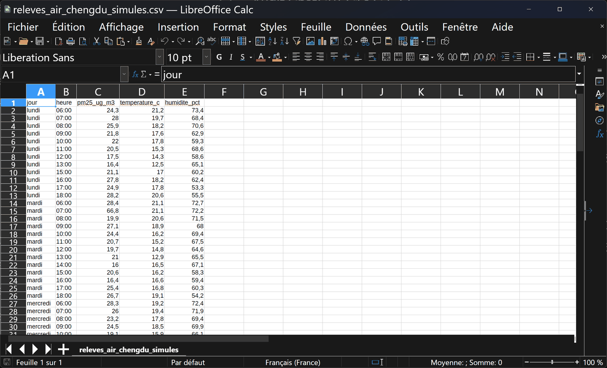
Comment savoir que c'est fait : chaque donnée est dans sa propre colonne, de A à E, avec les titres sur la ligne 1. Regarde la colonne pm25_ug_m3 : les nombres sont collés à droite de leur cellule. C'est la preuve que le tableur les a compris comme des nombres, et non comme du texte.
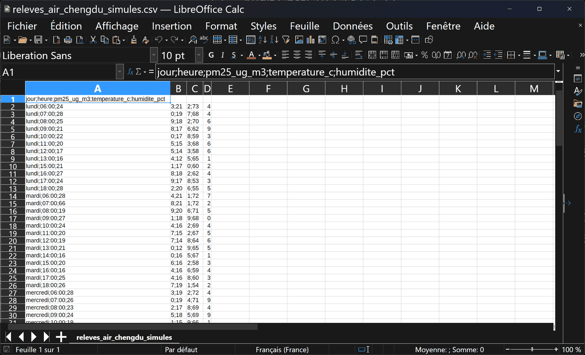
Si tu vois ceci : ta ligne de titres est collée dans la colonne A avec ses points-virgules. Et chaque relevé est coupé en plein milieu de ses nombres — 24 d'un côté, 3 de l'autre. Le séparateur choisi n'était pas le bon : c'était la virgule, qui sert ici de virgule décimale. Ferme le fichier sans l'enregistrer (Fichier → Fermer), recommence Fichier → Ouvrir… et coche Point-virgule.💡 Astuce — élargir une colonne
Si une colonne semble trop étroite (un mot coupé, un nombre collé à la colonne suivante), élargis-la : place le curseur sur la ligne fine entre deux lettres de colonnes (par exemple entre C et D), puis double-clique dessus — la colonne prend la largeur de son contenu. Pour toutes les colonnes d'un coup : clique sur la case vide en haut à gauche (au-dessus de la ligne 1, à gauche de la colonne A) pour tout sélectionner, puis un seul double-clic sur n'importe quelle ligne entre deux lettres suffit.
Nommer.Fichier → Enregistrer sous… tout de suite : • au format Classeur ODF (.ods) ; • sous 5E-AIR-TON NOM ; • dans Documents, dans le dossier qui porte le nom de ta classe (par exemple 5E1). Si ce dossier n'existe pas encore, crée-le d'abord : dans la fenêtre d'enregistrement, ouvre Documents, clique sur Nouveau dossier, tape le nom de ta classe, valide, puis entre dedans.
🖼 Le voir en images — 7 captures : ce que tu dois voir
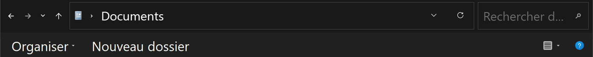
Ce que tu dois voir : le chemin, tout en haut, finit par Documents. Si la fenêtre s'ouvre ailleurs — Téléchargements, par exemple — clique sur Documents dans la colonne de gauche. Seul le haut de la fenêtre est montré ici : en dessous, tu verras la liste de tes propres dossiers. Cherche dedans celui qui porte le nom de ta classe : s'il y est, entre dedans (double-clic) et passe aux trois dernières images ; s'il n'y est pas, continue ci-dessous.
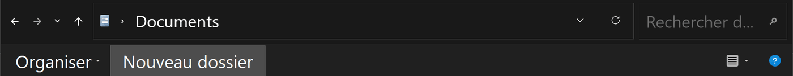
Le bouton Nouveau dossier : il est écrit en toutes lettres, dans la barre au-dessus de la liste des fichiers, juste à droite d'Organiser. Clique dessus.
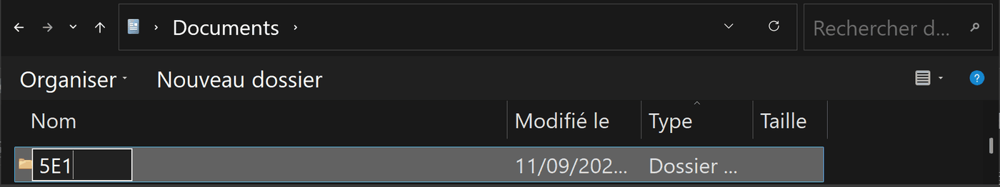
Ce que tu dois voir : une ligne apparaît dans la liste, avec une case où écrire à la place du nom. Tape le nom de ta classe, puis Entrée. 5E1 est un exemple : mets le nom de ta classe. Ici, la liste a été raccourcie à cette seule ligne ; chez toi, tes autres dossiers restent visibles autour.
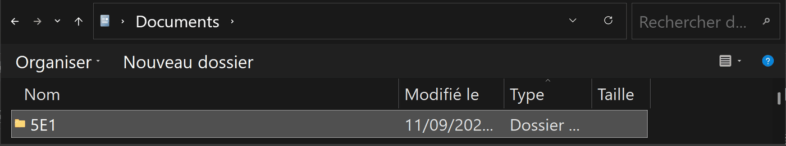
Comment savoir que c'est fait : la case où tu écrivais a disparu, et ton dossier porte son nom, avec la mention Dossier dans la colonne Type. Windows n'entre pas dedans tout seul : double-clique sur son nom pour y entrer. 5E1 est un exemple.Ce que tu dois voir avant d'enregistrer : trois choses. Le chemin, en haut, finit par Documents puis le nom de ta classe ; le Nom du fichier suit la consigne ; Type : Classeur ODF (*.ods) — si tu lis encore « Texte CSV », ouvre la liste et choisis Classeur ODF. Puis :Enregistrer. DUPONT et 5E1 sont des exemples : mets ton nom et ta classe.
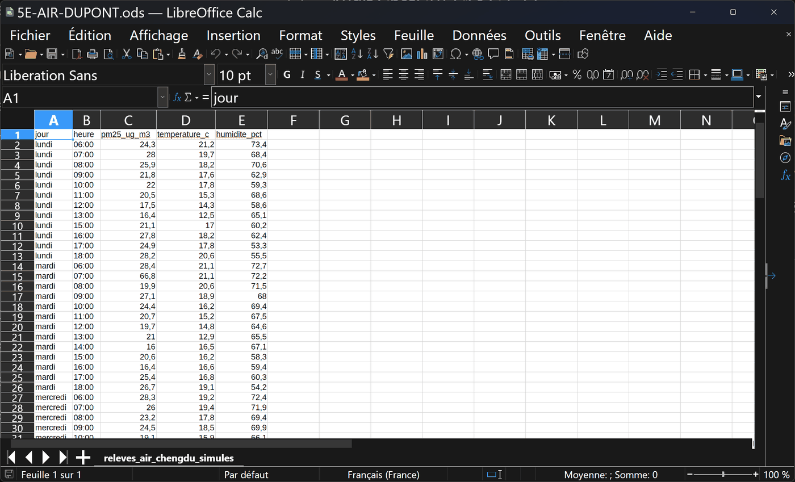
Comment savoir que c'est fait : la barre de titre, tout en haut, affiche ton nom de fichier suivi de .ods, et non plus .csv. DUPONT est un exemple.
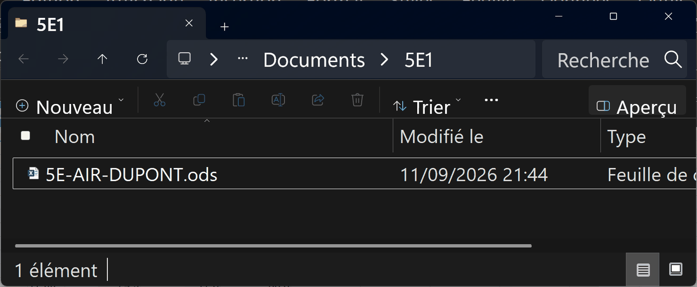
Pour vérifier, ou pour le retrouver plus tard : ouvre l'Explorateur de fichiers de Windows, va dans Documents, puis dans le dossier de ta classe : ton fichier .ods est là. Ce chemin — Documents, puis ta classe — est celui à refaire à la séance suivante. 5E1 et DUPONT sont des exemples.
Retrouver. Le tableur n'enregistre pas tout seul : Ctrl+S après chaque série de saisies. Rouvre ton fichier au début de la séance suivante pour vérifier qu'il est complet.
🖼 Le voir en images — 3 captures : ce que tu dois voirCe que tu dois voir avant Ctrl+S : tu as tapé quelque chose (ici « moyenne » en A92, sous la dernière ligne de relevés, un exemple). En bas à gauche de la fenêtre, la petite icône de la barre d'état est rouge : ce qui est à l'écran n'est pas encore sur le disque. Le raccourci n'ouvre aucune fenêtre : c'est cette icône qui te répond.
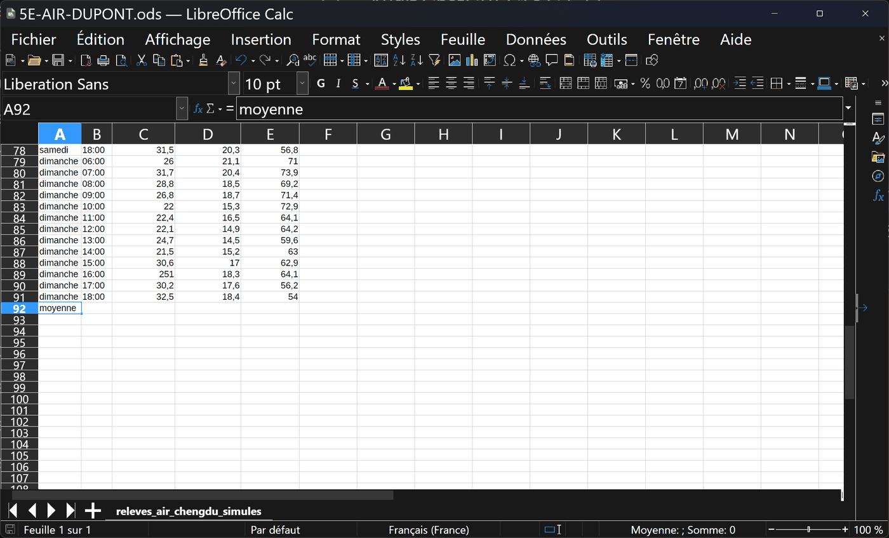
Comment savoir que c'est fait : après Ctrl+S, l'icône en bas à gauche redevient grise. Rien d'autre ne change à l'écran : c'est normal.
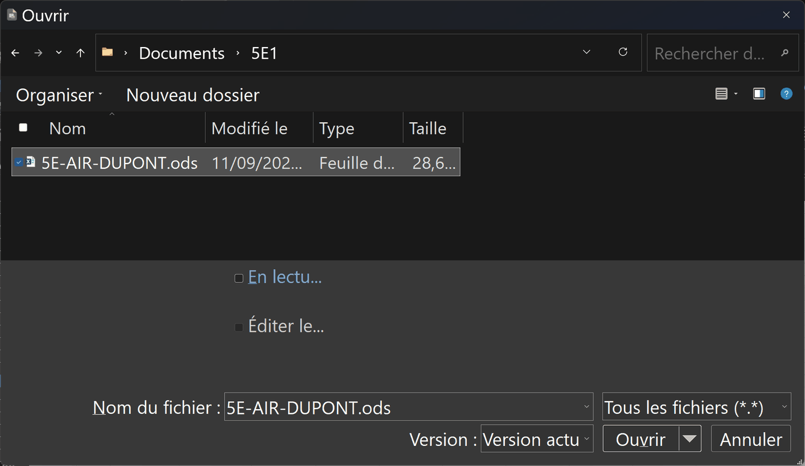
Pour rouvrir à la séance suivante :Fichier → Ouvrir…, va dans Documents, puis dans le dossier de ta classe. Choisis le fichier qui finit par .ods — pas le .csv, qui est le fichier de départ, sans ton travail. Le nom complet s'écrit en bas, dans Nom du fichier : c'est là qu'on vérifie. Le nom et le dossier sont des exemples.
Sortir. Le classeur est le rendu. D'abord, fais le graphique : ① sélectionne les colonnes B et C (heure, pm25_ug_m3) des douze lignes du lundi ; ② Insertion → Diagramme… ; ③ garde le type Colonnes, et Terminer. Un graphique se copie dans le compte rendu, ou s'exporte en image par un clic droit.
🖼 Le voir en images — 2 captures : ce que tu dois voirCe que tu dois voir : un clic sur le graphique (des petites poignées carrées apparaissent autour). Puis un clic droit : le menu propose Copier (pour le coller dans le compte rendu) et Exporter comme image. Le graphique montré est un exemple, construit sur les douze relevés du lundi.
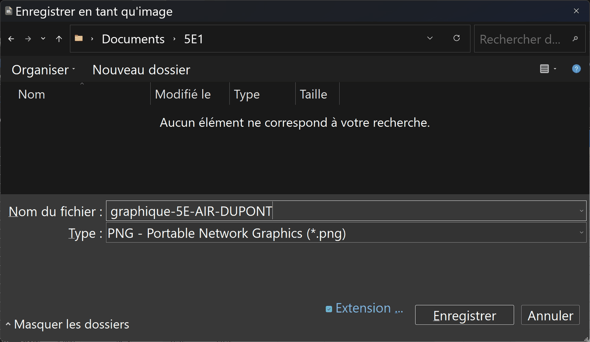
Comment savoir que c'est fait : après Exporter comme image, cette boîte s'ouvre ; garde le type PNG, donne un nom, vérifie que le chemin finit par le nom de ta classe, Enregistrer. Le fichier image apparaît dans ton dossier, à côté du classeur. Le nom et le dossier sont des exemples.
🗂 La fiche de l'activité : objectif, compétence, production attendue
Objectif nettoyer un jeu de données avant de l'exploiter ·
Compétence 5e_C1.1 · Production les anomalies repérées, et les moyennes après nettoyage
Le capteur tourne depuis une semaine. Le fichier
📥 releves_air_chengdu_simules.csv contient 90 relevés : jour, heure,
PM2.5 en µg/m³, température, humidité.
Il contient aussi quatre anomalies. Aucune n'est signalée. Tu
dois les trouver avant de calculer quoi que ce soit : une moyenne calculée sur des données
sales est fausse, et elle a l'air juste.
a) Reconnaître une anomalie
b) Deux chemins vers le même travail
Ce qui est évalué ici, c'est ta capacité à reconnaître ce qui n'est pas une mesure et à
dire ce que cela coûte au résultat. Le tableur est un outil : il fait le calcul, il ne
fait pas le raisonnement. Deux chemins mènent donc aux mêmes réponses — choisis le tien, ou suis
celui que ton professeur indique.
🔵 Chemin autonome : tu ouvres le fichier
📥 releves_air_chengdu_simules.csv dans un tableur, tu tries, tu repères, tu calcules
les deux moyennes toi-même. Les modes opératoires sont juste en dessous.
🟢 Chemin guidé : si le tableur n'est pas disponible, ou
s'il te ralentit, ouvre l'extrait ci-dessous. Il contient les lignes suspectes déjà sorties du
fichier et les deux moyennes déjà calculées. Le travail restant est exactement le
même : dire ce qui ne va pas dans chacune, et ce que l'écart entre les deux moyennes
signifie.
🟢 Chemin guidé — l'extrait déjà sorti du fichier
Jour et heure
Valeur relevée
Les heures voisines
mercredi 11 h
−4,2
27,1 puis 26,8
vendredi 9 h → 14 h
23,7 · 23,7 · 23,7 · 23,7 · 23,7 · 23,7
24,9 avant · 26,2 après
lundi 14 h
(aucune ligne)
26,0 à 13 h · 27,3 à 15 h
dimanche 16 h
251,0
24,8 puis 25,4
Moyenne calculée sur les 90 valeurs : 27,4 µg/m³.
Moyenne après avoir écarté les deux valeurs fausses (−4,2 et 251) : 25,2 µg/m³.
Ces deux nombres sont le résultat du calcul, pas la réponse à la question.
La réponse, c'est ce que tu écris en dessous.
c) Au tableur
Ouvre le fichier dans un tableur. Les modes opératoires ci-dessous valent pour les deux
logiciels que tu peux rencontrer — au collège comme chez toi.
📊 Mode opératoire — LibreOffice Calc (gratuit)
Ouvrir : Fichier → Ouvrir → choisir le .csv. Dans la fenêtre
d'import, cocher Point-virgule comme séparateur.
Trier : sélectionner les données → Données → Trier… → colonne
pm25_ug_m3, ordre croissant. Les valeurs impossibles apparaissent en tête.
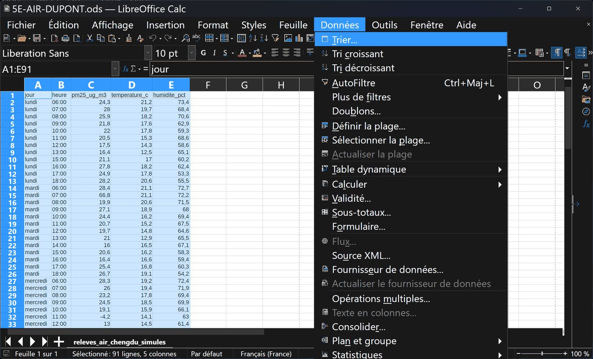
Ce que tu dois voir :toutes les colonnes sélectionnées, titres compris — la zone de nom, en haut à gauche, dit A1:E91 — puis le menu Données ouvert et Trier… surligné. Le nom du fichier est un exemple : le tien est celui que tu as enregistré à l'échauffement.
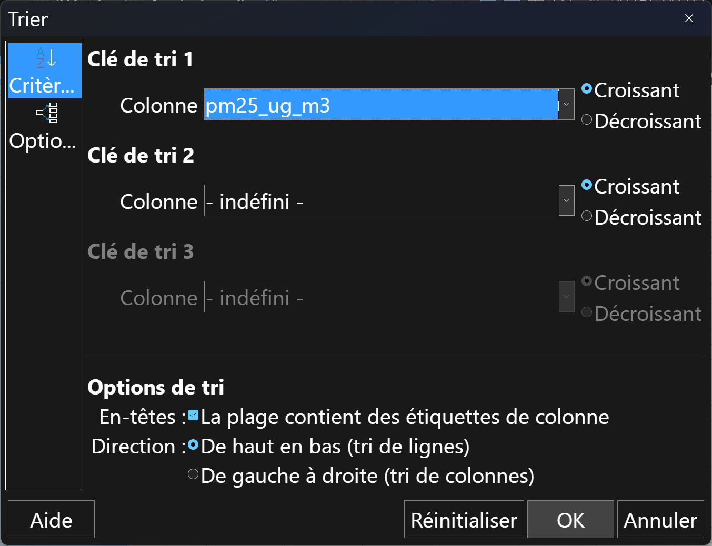
Ce que tu dois voir :Clé de tri 1 → pm25_ug_m3, Croissant, et la case La plage contient des étiquettes de colonne cochée — c'est elle qui garde la ligne de titres en haut. Puis :OK.
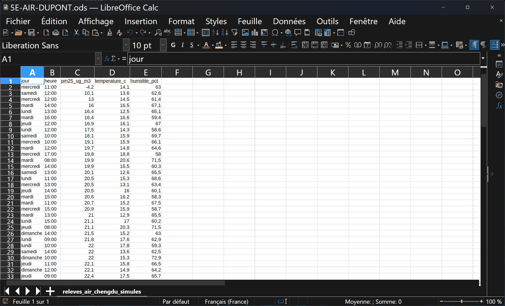
Comment savoir que c'est fait : les titres sont restés en ligne 1, et la première valeur de pm25_ug_m3 est −4,2 — la valeur impossible arrive en tête, comme le mode opératoire l'annonce. Regarde aussi la colonne A : mercredi 11:00 a suivi sa valeur. Un relevé est une ligne entière : elle se déplace d'un bloc.
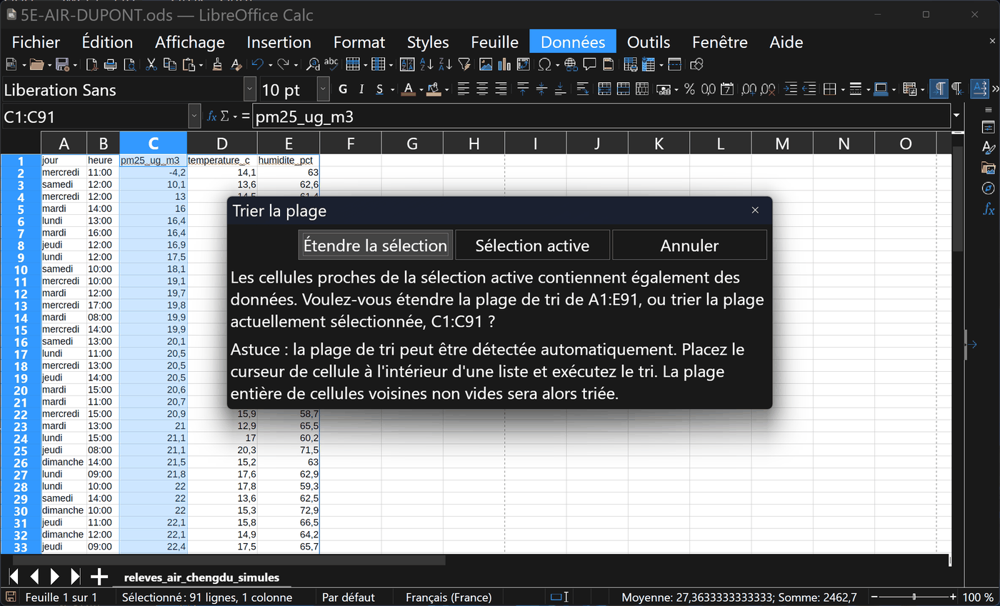
Si tu vois ceci : tu n'as sélectionné qu'une colonne avant de trier. Calc te le dit, et te propose d'étendre : choisis Étendre la sélection. Pourquoi : une ligne est un relevé, ses cinq cellules restent ensemble. « Sélection active » trierait la colonne toute seule, et chaque valeur perdrait son jour et son heure.
Moyenne : =MOYENNE(C2:C91)
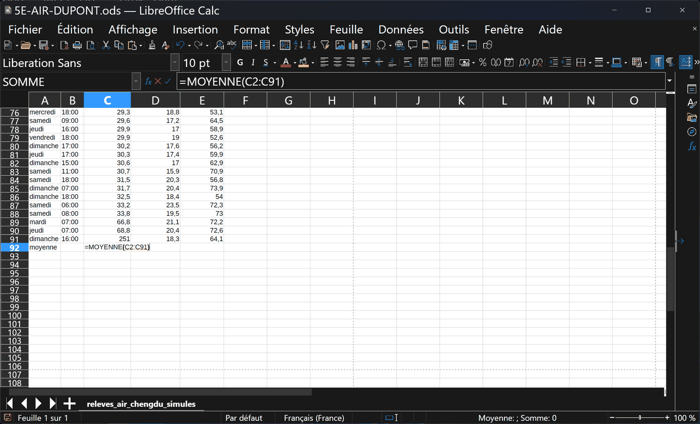
Ce que tu dois voir : la cellule sous la colonne pm25_ug_m3 (ici C92) active, et =MOYENNE(C2:C91) écrit à la fois dans la cellule et dans la barre de formule, avant d'appuyer sur Entrée. Le = est le premier caractère : c'est lui qui dit à Calc de calculer. « moyenne » en A92 est une étiquette, un exemple.
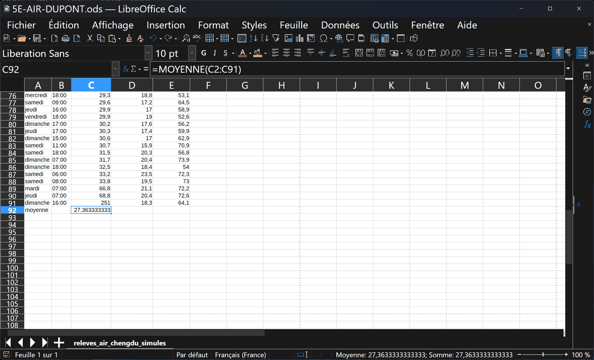
Comment savoir que c'est fait : la cellule affiche 27,363… — la moyenne brute, que la page arrondit à 27,4 µg/m³ — et la barre de formule, elle, montre encore =MOYENNE(C2:C91). Deux vues d'une même cellule : la formule dans la barre, le résultat dans la grille. La valeur est celle du fichier de la séquence.
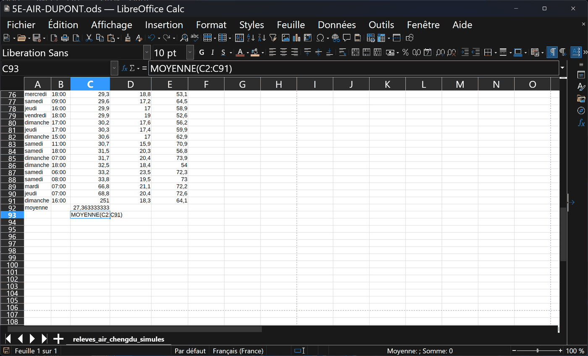
Si tu vois ceci : la cellule répète ta formule en toutes lettres, collée à gauche, sans nombre — tu as oublié le =. Sans lui, Calc range ce que tu tapes comme du texte. Reviens dans la cellule, ajoute = devant, valide.
Moyenne sans les valeurs fausses :
=MOYENNE.SI.ENS(C2:C91;C2:C91;">0";C2:C91;"<200")
Maximum : =MAX(C2:C91) · Nombre de valeurs :
=NB(C2:C91)
📊 Mode opératoire — Excel
Ouvrir : Données → À partir d'un fichier texte/CSV → séparateur
point-virgule.
Trier : Données → Trier → colonne pm25_ug_m3, du plus petit au
plus grand.
Moyenne : =MOYENNE(C2:C91)
Moyenne sans les valeurs fausses :
=MOYENNE.SI.ENS(C2:C91;C2:C91;">0";C2:C91;"<200")
Maximum : =MAX(C2:C91) · Nombre de valeurs :
=NB(C2:C91)
Les formules sont les mêmes dans les deux logiciels : seuls les menus
changent. C'est vrai de presque tout le tableur.
d) Ton relevé
🪜 Version étayée — des phrases à compléter
« Anomalie 1 : ____, à ____ h — c'est ____ parce que ____. »
« Anomalie 2 / 3 / 4 : (même modèle) »
« Moyenne avec les valeurs fausses : ____ µg/m³. »
« Moyenne sans : ____ µg/m³. L'écart est de ____. »
💡 Aide de niveau 1
Trie la colonne des PM2.5 du plus petit au plus grand : deux anomalies sautent aux
yeux immédiatement — l'une en haut, l'autre en bas.
💡💡 Aide de niveau 2
Les deux autres ne se voient pas au tri : l'une est une répétition (la même valeur
plusieurs heures de suite), l'autre est une absence (compte les lignes d'une journée :
il devrait y en avoir 13).
Un capteur qui répète exactement la même valeur pendant six heures a très probablement
cessé de mesurer : il est figé. Une vraie mesure varie presque toujours un peu. Ce n'est
pas une preuve, c'est un fort soupçon : on le signale, et on va vérifier l'appareil.
🎯 Critère de réussite : au moins 4 réponses justes sur 5, et ce que le message de « Vérifier » te demande encore.
📖 Correction complète
Les quatre anomalies :
Mercredi 11 h : −4,2 µg/m³. Impossible : une concentration est une
quantité de matière, elle ne peut pas être négative. Sans doute une erreur du capteur au
moment d'un redémarrage.
Vendredi, de 9 h à 14 h : 23,7 six fois de suite. Très probablement un capteur
figé. Une vraie mesure varie presque toujours un peu : à 0,1 près, six valeurs
strictement identiques d'affilée sont très improbables. Ce n'est pas une preuve — on le
signale comme suspect, on vérifie le capteur, et on ne conclut rien sur l'air de ce
vendredi.
Lundi 14 h : relevé manquant. La journée ne compte que 12 lignes au lieu de 13.
On le signale, et on calcule sans lui — on n'invente jamais une mesure.
Dimanche 16 h : 251,0 alors que les heures voisines sont vers 25. Une
virgule décalée : 25,1 est devenu 251.
Les moyennes : 27,4 µg/m³ avec les valeurs fausses, 25,2 µg/m³ sans. L'écart paraît petit — 2,2 µg/m³ — et il vient de deux valeurs sur quatre-vingt-dix (−4,2 et 251). C'est exactement pour cela qu'il est dangereux : une moyenne calculée sur des données
sales n'a pas l'air fausse. Rien ne signale l'erreur.
Dans le tableur : les quatre anomalies, puis les formules de la page et ce qu'elles rendent.
La capture de Calc : chaque anomalie et ce qui ne va pas, puis chaque résultat et sa formule.
📥 Le fichier corrigé (.ods) : feuille « releves », les anomalies gardées dans le fichier, colorées, avec leur note, et les formules sous la colonne (à partir de C92) ; feuille « Corrigé », la capture ci-dessus.
Ce qu'on fait des valeurs fausses : on les écarte du calcul, mais on les
garde dans le fichier avec une note. Les effacer, c'est perdre la trace d'un
dysfonctionnement du capteur — et c'est justement ce qu'il faut signaler au technicien.
🔎 Et pendant que tu triais, tu as peut-être vu autre chose : les
mardis et jeudis à 7 h, la valeur monte à 67-69 µg/m³ contre 26-28 les autres jours. Ce
n'est pas une anomalie — c'est un fait, et il reviendra à la séance 5.
🧠 À retenir : on nettoie avant de calculer. Une moyenne
calculée sur des données sales est fausse — et elle a l'air juste.
⚠️ Piège classique : effacer les valeurs fausses. On les écarte du
calcul, on ne les supprime pas : ce sont des traces de panne.
🗂️ Activité 3 — Ranger, et retrouver (~35 min)
🗂 La fiche de l'activité : objectif, compétence, production attendue
Objectif concevoir une arborescence et des noms qui se retrouvent ·
Compétence 5e_C1.4 · Production l'arborescence rangée, et trois règles de nommage
Trois semaines de relevés, et le dossier du professeur ressemble à ceci
(📥 arborescence_actuelle_simulee.csv) : 14 entrées, dont
truc.csv, finalV2 (copie).csv, Nouveau dossier/ et
capteur mardi PIC ATTENTION.csv.
Personne ne retrouve rien — y compris celui qui a rangé. Dans
trois mois, ce sera pire.
a) Ce qui rend un nom utilisable
b) Ton arborescence
🪜 Version étayée — la structure est donnée
« station-air-chengdu/ »
« 1-____/ » puis les fichiers qu'il contient, renommés
Regroupe par nature, pas par date : les relevés bruts d'un côté, ce que tu en as
tiré de l'autre, les documents reçus ailleurs, les photos à part.
💡💡 Aide de niveau 2
Numérote tes dossiers (1-, 2-…) si tu veux qu'ils s'affichent dans
l'ordre du travail et non par ordre alphabétique.
Et vérifie ton rangement par un test : « dans six mois, sauras-tu retrouver le
graphique de la semaine 11 sans ouvrir aucun fichier ? » Si la réponse est non,
les noms ne sont pas assez parlants.
🎯 Critère de réussite : au moins 4 réponses justes sur 5, et ce que le message de « Vérifier » te demande encore.
📖 Correction complète — avec l'arborescence attendue
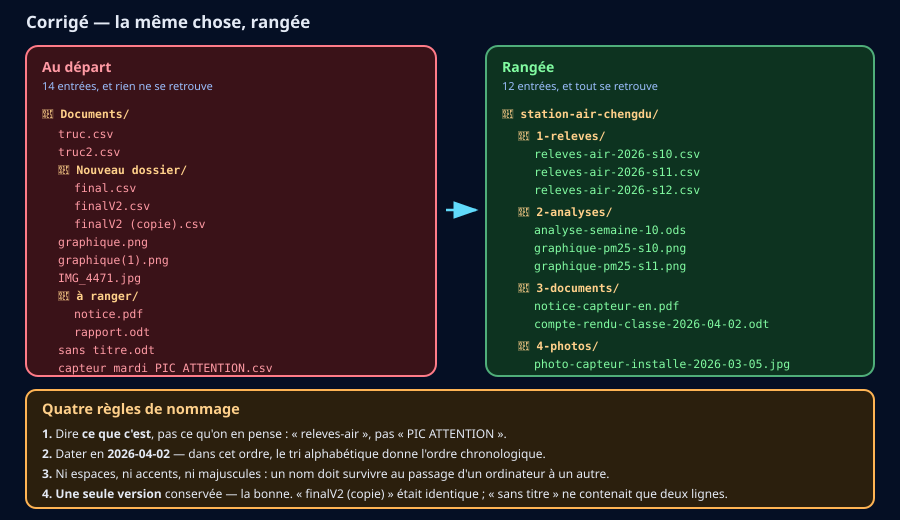
Compare la structure, pas les mots : d'autres découpages se
défendent.
Quatre règles de nommage :
Dire ce que c'est, pas ce qu'on en pense. releves-air-2026-s10, pas
PIC ATTENTION — un jugement vieillit, un contenu non.
Dater en 2026-04-02 : dans cet ordre, le tri alphabétique donne
l'ordre chronologique. C'est la seule raison, et elle suffit.
Ni espaces, ni accents, ni majuscules : un nom doit survivre au passage d'un
ordinateur, d'un site ou d'une clé USB à l'autre.
Une seule version conservée — la bonne. finalV2 (copie) était
identique ; sans titre.odt ne contenait que deux lignes. Deux fichiers
identiques ne font pas une sécurité : ils font un doute.
Le test qui tranche : dans six mois, retrouver le graphique de la semaine 11
sans ouvrir un seul fichier. Avec graphique(1).png, impossible. Avec
2-analyses/graphique-pm25-s11.png, immédiat.
🧠 À retenir : un nom de fichier s'écrit pour celui qui
cherchera — souvent soi-même, dans six mois, et sans souvenir.
⚠️ Piège classique : ranger par date de création plutôt que par
nature. On cherche presque toujours « le graphique », rarement « ce que j'ai fait
le 17 mars ».
🔗 Activité 4 — Le chemin de la donnée (~35 min)
🗂 La fiche de l'activité : objectif, compétence, production attendue
Objectif décrire le rôle d'un système d'information dans le partage ·
Compétence 5e_C1.3 · Production les quatre étages, et qui a le droit de faire quoi
Le capteur mesure. Le tableur calcule. Le graphique s'affiche sur l'ENT. Entre les deux, il y a
des fichiers, un serveur, des personnes et des droits : c'est cela, un système
d'information. Ce n'est pas une machine — c'est une chaîne.
« 3. Le traitement : ____. Écrit ici : ____, dans ____. »
« 4. La diffusion et la décision : ____. Publie : ____. »
💡 Aide de niveau 1
Suis une seule valeur — celle du mardi 7 h — et demande-toi, à chaque endroit où elle passe :
qu'est-ce qui lui arrive ici ?
💡💡 Aide de niveau 2
Les quatre étages se reconnaissent à ce qu'ils font : l'un produit, l'autre
conserve, le troisième transforme, le dernier montre.
Pour les droits, pose-toi la question à l'envers : si cette valeur changeait, qui
aurait pu le faire ? La réponse te donne la liste.
🎯 Critère de réussite : au moins 4 réponses justes sur 5, et ce que le message de « Vérifier » te demande encore.
✍ Ta réponse écrite sera relue par ton professeur : « Vérifier » regarde si l'essentiel y est, pas si tout est juste.
📖 Correction complète — avec le schéma attendu
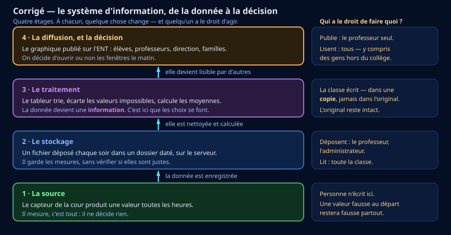
Les quatre étages, et la colonne qui compte : qui a le droit de faire
quoi.
1 · La source. Le capteur produit une valeur par heure. Il ne décide de rien. Et
personne n'y écrit : une valeur fausse au départ le restera partout, tant qu'on ne l'écarte
pas.
2 · Le stockage. Un fichier déposé chaque soir dans un dossier daté. Il conserve,
il ne juge pas. Déposent : le professeur et l'administrateur. Lit : toute la classe.
3 · Le traitement. Le tableur trie, écarte, calcule : la donnée devient une
information. C'est ici que se font les choix — et donc ici qu'on peut se tromper. La classe
écrit dans une copie, jamais dans l'original.
4 · La diffusion, et la décision. Le graphique sur l'ENT : élèves, professeurs,
direction, familles. On décide d'ouvrir ou non les fenêtres. Publie : le professeur seul —
parce qu'à partir d'ici, ce qui est publié échappe à celui qui l'a écrit.
Le rôle d'un système d'information n'est pas de transporter une donnée :
c'est de la rendre utilisable par quelqu'un d'autre. À chaque étage, elle change — et à
chaque étage, quelqu'un peut se tromper. C'est pourquoi on écrit qui a le droit de faire quoi.
🧠 À retenir : un système d'information est une chaîne de
personnes et d'outils, pas une machine. Chaque étage transforme la donnée ; chaque étage
a ses droits.
⚠️ Piège classique : croire qu'une donnée « circule » sans
changer. Elle est nettoyée, calculée, mise en forme — et à la fin, ce qu'on lit n'est plus ce que
le capteur a mesuré.
🔒 Activité 5 — Protéger, puis répondre (~45 min)
🗂 La fiche de l'activité : objectif, compétence, production attendue
Objectif sécuriser un environnement numérique, puis assumer une
publication · Compétences 5e_C1.5 et 5e_C1.6 · Production les mesures de sécurité, et
la décision de publication justifiée
Ce qui s'est passé. Le fichier de relevés a été déposé sur l'ENT du collège pour que
chacun puisse travailler dessus. Trois jours plus tard, le professeur l'ouvre : quatre
valeurs ont changé, et la moyenne n'est plus la même. Personne n'a rien dit.
a) Sécuriser (5e_C1.5)
🪜 Version étayée — des phrases à compléter
« Mesure 1 : ____. Cela empêche ____. »
« Mesure 2 : ____. Cela empêche ____. »
« Mesure 3 : ____. Cela empêche ____. »
b) Répondre (5e_C1.6)
Le fichier est restauré. En le nettoyant, la classe remarque enfin ce que le tri avait montré
dès la séance 2 : les mardis et jeudis à 7 h, la valeur monte à 67 µg/m³ (microgrammes par mètre cube) contre 26 les
autres jours.
La classe cherche, et trouve : la balayeuse mécanique passe dans la cour ces jours-là,
à cette heure-là. Le fait est exact. Et dans ce collège, une seule personne conduit cette
balayeuse.
📄 Document à lire. Les trois publications sont vraies. C'est ce qui
rend le choix difficile — et c'est pour cela qu'il t'appartient.
🪜 Version étayée — des phrases à compléter
« Les relevés montrent que ____ les mardis et jeudis à 7 h. »
« Ce pic correspond à ____. »
« Nous proposons de ____. »
« J'ai volontairement écarté ____, pour protéger ____. »
💡 Aide de niveau 1
Écris d'abord ce que tu veux obtenir — que le nettoyage change d'heure. Puis demande-toi
le minimum d'informations nécessaire pour l'obtenir.
💡💡 Aide de niveau 2
Une publication utile désigne ce qu'il faut changer, pas qui a mal fait. Ici,
rien n'a été mal fait : quelqu'un nettoie la cour, c'est son travail, et c'est l'horaire
qui pose problème.
Test avant de publier : si cette personne lisait ta publication, pourrait-elle
continuer à travailler sereinement le lendemain ? Si la réponse est non, réécris.
🎯 Critère de réussite : au moins 7 réponses justes sur 9, et ce que le message de « Vérifier » te demande encore.
✍ Ta réponse écrite sera relue par ton professeur : « Vérifier » regarde si l'essentiel y est, pas si tout est juste.
📖 Correction complète
Les trois mesures de sécurité (d'autres sont recevables si elles disent ce qu'elles
empêchent) :
Droits minimaux : le fichier de référence est déposé en lecture seule ;
seul le professeur peut y écrire. Empêche qu'une modification passe inaperçue, et rend
inutile de soupçonner qui que ce soit.
Copie de travail : chaque groupe travaille sur sa propre copie. Empêche
que le travail des uns écrase celui des autres.
Sauvegarde datée de l'original avant partage. Empêche la perte définitive :
on peut comparer, voir ce qui a changé, et revenir en arrière.
Sur la notice du fabricant : être trouvable sur internet ne veut pas dire libre de
droits. On vérifie la licence, et on cite la source dans tous les cas — même quand
la republication est autorisée.
Sur le mot de passe partagé : il ne protège plus rien, et surtout il rend
impossible de savoir qui a fait quoi. Un compte par personne n'est pas une formalité : c'est
ce qui permet de ne soupçonner personne.
La publication. Voici la version C, développée :
« Les relevés du capteur de la cour montrent une concentration de particules
2,5 fois plus élevée les mardis et jeudis à 7 h (67 µg/m³ contre 26 les autres jours). Ce pic correspond au nettoyage mécanique de la cour, programmé ces jours-là à cette
heure. Nous proposons de décaler ce nettoyage avant l'arrivée des élèves, ou de
l'effectuer en fin de journée. »
Ce qui a été écarté : le nom de l'agent, sa photo, et toute formule qui permettrait
de le reconnaître — y compris « la personne qui passe la balayeuse », qui dans un
collège ne désigne qu'une personne. Pour protéger quelqu'un qui n'a rien fait de mal :
il fait son travail, à l'heure qu'on lui a donnée.
Et ce qui n'a pas été écarté : le chiffre, la cause et la proposition. Sans eux, la
publication serait honnête et inutile — et l'air de la cour resterait le même.
🧭 Le test qui tranche : si cette personne lisait ta publication,
pourrait-elle continuer à travailler sereinement le lendemain ? Avec la version C, oui :
ce qui est mis en cause est un horaire, pas quelqu'un.
🧠 À retenir : on n'a pas le choix des faits, on a le choix de
ce qu'on en publie. La question n'est pas « est-ce vrai ? » mais
« qui cela désigne, et pour quel effet ? »
⚠️ Piège classique : croire qu'une information est anonyme parce
qu'elle ne contient pas de nom. Dans un petit groupe, une fonction, un horaire ou une habitude
suffisent à désigner quelqu'un.
Critère de réussite : tes trois mesures disent ce qu'elles empêchent, et ta
publication contient le chiffre, la cause et une proposition — sans permettre de reconnaître
quiconque.
🎟 Billet de sortie — seul, sans aide (~5 min)
Un objet nouveau : le thermomètre connecté de la serre du collège.
Seul, sans aide : ce billet dit ce qui est acquis.
Jeudi, le thermomètre de la serre a écrit dans son fichier :
8 h : 24,1 °C (degrés Celsius) · 9 h : 25,0 °C · 10 h : −12,0 °C · 11 h : 27,3 °C · 12 h : rien.
Le fichier s'appelle « serre JEUDI chaud !!.csv ».
🪜 Version étayée — des phrases à compléter
« À ____ h, ____ : c'est ____. »
« À ____ h, ____ : c'est ____. »
« Je les ____ du calcul, et je ____. »
🪜 Version étayée — des phrases à compléter
« Je l'appelle ____ , parce qu'il dit ____ , avec la date ____ , sans ____. »
📖 Correction complète — ouvre-la après avoir écrit tes deux réponses
1. Une réponse possible. À 10 h, −12,0 °C : une valeur impossible dans une serre de Martinique, un défaut de mesure.
À 12 h, rien : une donnée manquante.
Je les écarte du calcul, je garde le fichier d'origine tel quel, et je note ce que j'ai écarté : la moyenne se calcule sur les trois autres valeurs.
Critère : les deux anomalies sont trouvées, écartées du calcul et signalées, sans rien inventer.
✘ Remplacer −12,0 par 0 : c'est inventer une mesure.
✘ Recopier à midi la valeur de 11 h : c'est inventer aussi.
2. Une réponse possible. « 2026-11-19_serre_temperatures.csv » : la date à l'envers, ce que contient le fichier, sans espace, sans accent, sans majuscule, et sans avis.
Critère : le nom dit ce que contient le fichier, avec une date qui se trie (année-mois-jour), et rien de ce qu'on en pense.
✘ « fichier_final.csv » : il ne dit pas ce qu'il contient.
✘ « 19-11-2026 serre.csv » : la date ne se trie pas, et l'espace peut casser le nom.
🎁 Bonus (facultatif — hors parcours obligatoire)
🎁 Les 3 défis du Bonus — ouvre-les quand tu as fini
Réponds dans les cadres avant d'ouvrir le corrigé : c'est en cherchant
que le corrigé devient utile.
1. Cherche une donnée publique sur ta commune — qualité de l'air, pluviométrie,
fréquentation d'un équipement. Combien de temps te faut-il pour la trouver ? Est-elle
téléchargeable, ou seulement affichée ?
2. Range ton propre dossier de travail (celui du collège, ou celui de ta clé USB) selon
les quatre règles de nommage. Compte les fichiers que tu supprimes.
3. Trouve, dans l'actualité ou autour de toi, un cas où une donnée exacte a
désigné quelqu'un. Qu'aurait-il fallu publier à la place ?
📖 Corrigé du Bonus — un exemple entièrement traité
1. Une donnée publique sur la commune. Exemple pris : la qualité de l'air en
Martinique, publiée par l'association agréée de surveillance (Gwad'Air / Madininair selon les
territoires). Sept minutes pour trouver la page, et une découverte : la valeur du
jour s'affiche, mais l'historique n'est téléchargeable qu'en demandant.
Ce qu'on apprend en cherchant : une donnée « publique » n'est pas
toujours réutilisable. Voir un chiffre et pouvoir le traiter sont deux choses
différentes — et c'est exactement la distinction entre diffusion et partage vue à
la séance 4.
2. Le rangement de mon dossier. 47 fichiers au départ. Après application des quatre
règles : 31 fichiers, dans 4 dossiers. 16 supprimés — dont neuf doublons
(DM (1).odt, DM (2).odt…), quatre brouillons vides, et trois captures
d'écran dont je ne savais plus à quoi elles servaient.
Ce qui surprend : le tiers du dossier ne servait à rien, et il n'était pas
identifiable avant qu'on regarde chaque fichier un par un. C'est le prix des mauvais noms.
3. Une donnée exacte qui désigne quelqu'un. Exemple pris : un collège publie le
taux de réussite au DNB par classe. Les chiffres sont exacts. Mais avec une seule classe
de 3e B, « la 3e B a 62 % » désigne aussi le professeur principal de la 3e B, et
trente élèves reconnaissables par leurs camarades.
Ce qu'il aurait fallu publier : le taux de l'établissement, et son évolution
sur trois ans. Cela répond à la vraie question — l'établissement progresse-t-il ? — sans
désigner ni une classe, ni un professeur, ni des élèves.
C'est le même raisonnement que pour la balayeuse, sur un autre objet : la
donnée est exacte, l'échelle de publication est ce qui décide qui elle désigne. Changer
l'échelle, ce n'est pas mentir : c'est choisir ce que la donnée doit servir.
🪞 Mon bilan personnel (~10 min)
🏠 Peut se faire à la maison (sans matériel, sur téléphone)
💭 Rappel de ton hypothèse de départ :
🪜 Version étayée — des phrases à compléter
« J'avais trouvé ____ étapes sur six. »
« Celles auxquelles je n'avais pas pensé : ____. »
« Celle qui m'a le plus surpris·e : ____, parce que ____. »
🪜 Version étayée — des phrases à compléter
« J'ai appris qu'une moyenne calculée sur des données sales ____. »
« J'ai appris qu'un nom de fichier s'écrit pour ____. »
« J'ai appris qu'une information exacte peut ____. »
🪜 Version étayée — des phrases à compléter
« Je dois encore revoir ____, parce que ____. »
« Ce que je n'arrive pas encore à faire seul·e : ____. »
🧭 Comment j'ai travaillé
Ces trois questions ne portent pas sur ce que tu as trouvé, mais sur comment
tu t'y es pris. Elles sont reprises de la séquence précédente sur ce thème, où elles étaient déjà
la meilleure idée.
Je me positionne
🧠 Prêt·e à t'entraîner ?
Le QCM (questionnaire à choix multiples) de la séquence compte 30 questions, dont 13 illustrées — les quatre documents du dossier y reviennent, chacun sous un angle différent, et chaque réponse
fausse y est expliquée. Elles se répartissent sur les six codes :
Dans le QCM, tu peux à tout moment choisir : parcours complet (les 30),
10 questions, révision ciblée (une compétence au choix), ou uniquement mes
erreurs. Avec six compétences, la révision ciblée est particulièrement utile.
![Boîte de dialogue « Import de texte » de LibreOffice Calc, en français et en mode sombre, pour le fichier releves_air_chengdu_simules.csv. En haut : Jeu de caractères « - Automatique - », Locale « Par défaut - Français (France) », À partir de la ligne 1. Dans « Options de séparateur », le bouton « Séparé par » est sélectionné ; parmi les cases Tabulation, Virgule, Point-virgule, Espace et Autre, seule Point-virgule est cochée. En bas, l'aperçu montre les données réparties en cinq colonnes : jour, heure, pm25_ug_m3, temperature_c, humidite_pct ; la colonne pm25_ug_m3 affiche 24,3 puis 28,0 puis 25,9, écrits avec une virgule. Les boutons OK et Annuler sont en bas à droite.](Images/geste_tableur_1_ouvrir_import_csv.png)

![Fenêtre de LibreOffice Calc en mode sombre avec un diagramme en colonnes posé sur la feuille et sélectionné : de petites poignées carrées l'entourent. Un menu contextuel est ouvert par-dessus : Couper, Copier, Coller, Position et taille, Ancre, Positionner, Nom, Texte alternatif, Assigner la macro, Exporter comme image, Éditer. Le diagramme porte la légende pm25_ug_m3 et ses douze colonnes se lisent heure par heure, de 06:00 à 18:00. Derrière, on lit les relevés de lundi, mardi et mercredi, dont la valeur négative −4,2 à la ligne 32.](Images/geste_tableur_4_sortir_clic_droit_graphique.png)
![Capture de LibreOffice Calc, feuille Corrigé. En haut, les quatre anomalies, colorées : mercredi 11:00, moins 4,2, impossible car une concentration n'est jamais négative ; vendredi de 09:00 à 14:00, 23,7, la même valeur six heures de suite, capteur figé à vérifier ; lundi 14:00, aucune ligne, relevé manquant que l'on signale sans rien inventer ; dimanche 16:00, 251,0, virgule décalée, 25,1 devenu 251. En bas, ce que le tableur calcule, avec la formule : moyenne de toutes les valeurs 27,4 par =MOYENNE(C2:C91) ; moyenne sans les valeurs fausses 25,2 par =MOYENNE.SI.ENS(C2:C91;C2:C91;">0";C2:C91;"<200") ; écart 2,2 par =C92-C93 ; maximum 251,0 par =MAX(C2:C91) ; nombre de relevés 90 par =NB(C2:C91) ; lignes du lundi 12 par =NB.SI(A2:A91;"lundi").](Images/capture_corrige_anomalies_moyennes.png)
![Trois panneaux. La mesure : 67 µg/m³ les mardis et jeudis à 7 h contre 26 les autres jours, exacte et ne désignant personne. L'explication : la balayeuse mécanique passe ces jours-là, et une seule personne la conduit. La publication, avec trois options : A nomme l'agent, exacte et inacceptable ; B tait la cause, acceptable et inutile ; C nomme le nettoyage mécanique et propose de le décaler, exacte, utile, et désignant une organisation. Une bande conclut qu'on n'a pas le choix des faits mais de ce qu'on en publie.](Images/la_donnee_qui_designe.svg)